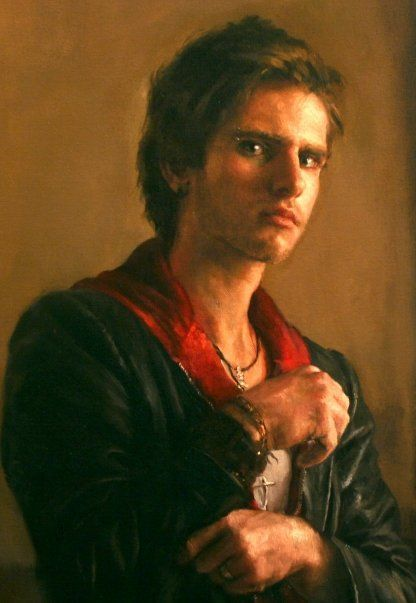

NUOVO VOLTO DELL'ARTE
Dopo l'università studiò per un po' con Matías Movillo, che gli insegnò alcune tecniche importanti, e da quel momento Lorca iniziò "solo guardando i bravi pittori come Velázquez". Lorca non fa mistero del suo fascino per pittori classici come Rembrandt e Diego Velázquez, e quell'influenza può essere vista nel suo lavoro influenzato dal barocco che tratta temi delicati come la violenza, la sensualità, l'innocenza e l'infanzia. Dopo la sua prima mostra personale alla Galería Matthei, nel 2007, Lorca ha avuto l'opportunità di trascorrere del tempo come apprendista e assistente nello studio dell'artista norvegese Odd Nerdrum, vicino a Oslo. Lorca è stato il suo primo protetto latinoamericano. Nel 2008 è tornato in Cile dalla Norvegia e, tra gli altri progetti e mostre, Lorca ha preparato la sua seconda mostra personale presso l'Art Room CCU nel 2010. Nello stesso anno, ha creato diversi ritratti di grande formato per la stazione della metropolitana Baquedano a Santiago (2009 - 2010), diventando l'artista più giovane ad esporre le sue opere nella metropolitana. Quei sei murales rappresentano la gente comune cilena e gli utenti della metropolitana e possono ancora essere visti nella stazione di Baquedano.
Questo giovane artista di 29 anni ha già completato nella sua carriera un murale di 40 metri, dipinto all'età di 20 anni, nel vigneto Tabalí a Ovalle. All'inizio del 2012, Guillermo Lorca ha tenuto la sua terza mostra personale presso la galleria Hilario Galguera in Messico, un luogo che si distingue come rappresentante di artisti stranieri di grande importanza, come Damien Hirst o Gottfried Helnwein.
Nel corso del 2013 Guillermo Lorca ha partecipato ad Art Spot Miami, Stati Uniti. E alla Fiera d'Arte Contemporanea Ch.ACO di Santiago del Cile. Nello stesso anno, Guillermo Lorca si è anche cimentato nel cinema come attore nel film L'estate del pesce volante nel 2013, della regista Marcela Said. Il tema della storia è basato sul conflitto di lunga data tra i nativi Mapuche ei proprietari terrieri bianchi di origine europea. Il film è stato presentato in anteprima al Festival di Cannes e in esso Lorca interpreta se stesso.
Nel 2014, Lorca ha organizzato la sua quarta mostra personale intitolata Eternal Life al Museo Nacional de Bellas Artes, essendo il pittore più giovane ad esporre con questa istituzione. La mostra stessa ha avuto un'intensa copertura mediatica e un'enorme influenza sul pubblico.
La vida eterna ha presentato 24 dipinti ad olio di Lorca che mescolano il realismo con l'innocenza onirica; opere che evocano i sentimenti più primitivi degli esseri umani. Ognuno di questi dipinti ha una narrazione, ma la storia ha un significato nascosto che genera qualcosa di diverso, qualcosa che "scuote le viscere" dello spettatore. Le fiabe classiche viaggiano di generazione in generazione e in esse si tenta di interpretare l'animo umano. La capacità di parlare una lingua dell'inconscio è formata da loro ed è qualcosa di diretto per i bambini: "Penso che anche se la pittura non può replicare esattamente quel fenomeno, la mia idea era quella di trovare qualcosa che avesse un po' di quello spirito, e ho scoperto che in un dipinto realistico evoca e mantiene la propria narrativa e cerca di fare appello ai più basilari sentimenti umani.

.jpg)